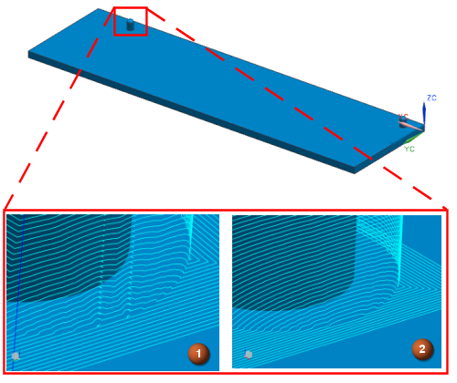

The fixed axis surface contouring processor has been enhanced to improve operations on large parts that contain multiple small cut areas or trim boundaries.
The processor calculates each small tool path locally to improve the accuracy of the tool path, the calculation speed at which it is created, and the quality of the surface finish.

|
1. |
Previous versions of NX |
|
2. |
NX 8.5 |